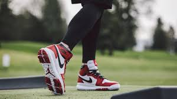

El calzado Air Jordan 1 Mid está inspirado en el primer AJ1, lo que le da a los fanáticos de OG una idea de cómo ha avanzado la marca Jordan desde 1985.
Beneficios
*La unidad Air-Sole proporciona amortiguación ligera.
*La capellada de cuero y materiales sintéticos brinda durabilidad y un look premium.
*La suela de goma sólida mejora la tracción en distintos tipos de superficies.
*Color que se muestra: Negro/Blanco/Rojo gimnasio/Gris partícula
*Estilo: 554724-060
*País/región de origen: Vietnam